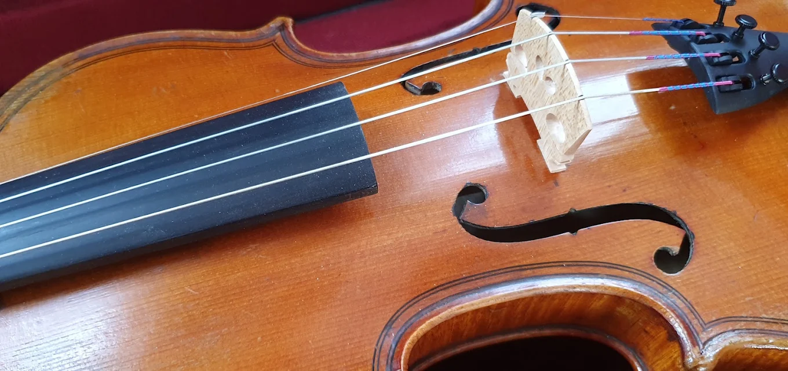
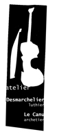
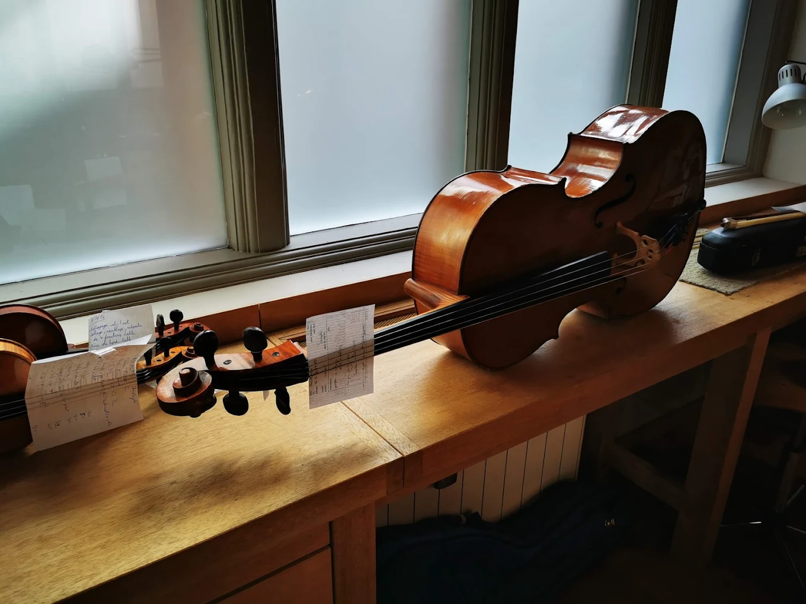
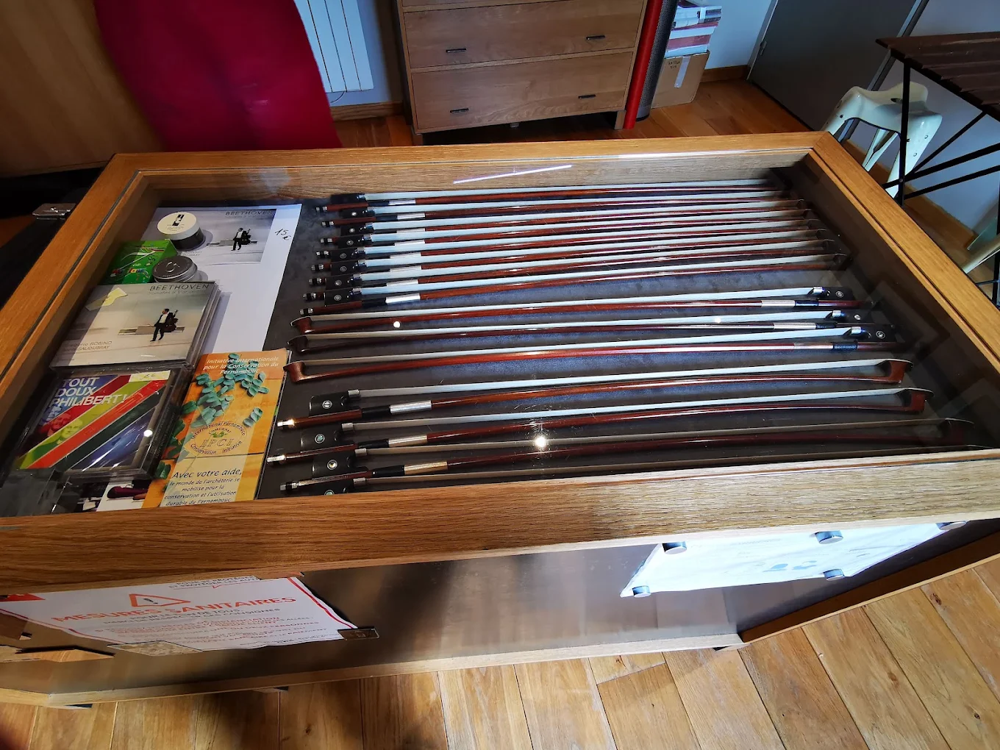
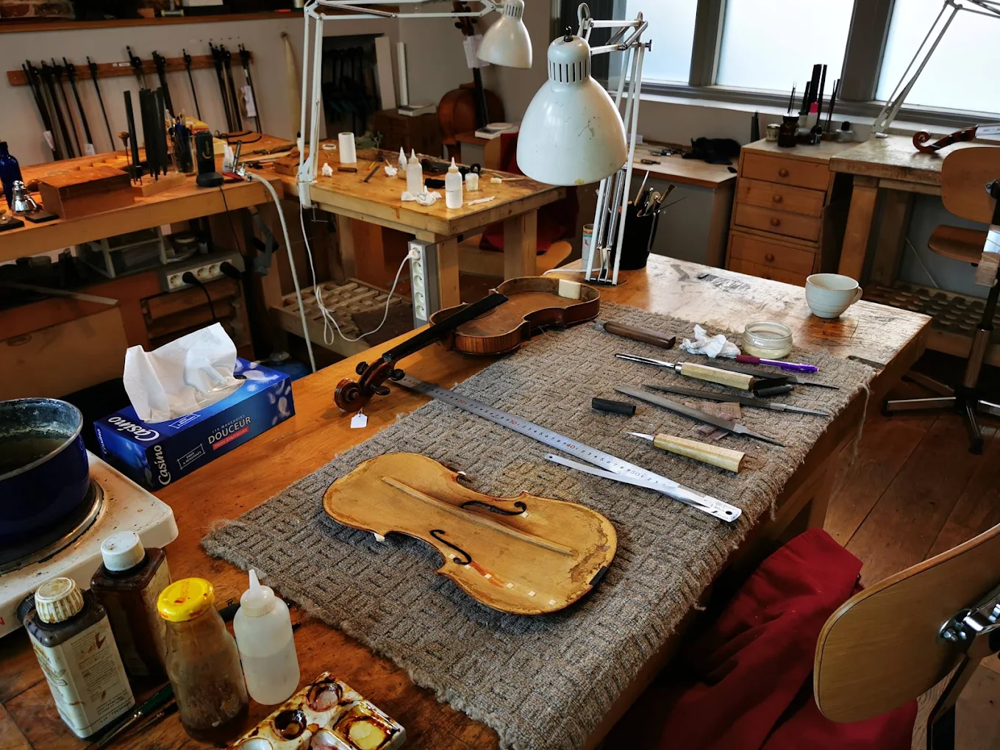

01L’art de la lutherie
JULIETTE DESMARCHELIERFabriquer, restaurer, régler. Prendre soin de l’instrument, respecter son caractère et laisser sa voix s’exprimer.
Explorer la lutherie
ATELIERDesmarchelier & Le CanuLUTHERIE & ARCHÈTERIE · LILLE
ARTISANAT D’ART · VIEUX-LILLE
Lutherie et archèterie d’art. Deux savoir-faire
façonnés à la main, au service de votre musique.
ATELIER DESMARCHELIER – LE CANU : LUTHIER ET ARCHETIER
AU FIL DE L’ATELIER01 / NOS SAVOIR-FAIRE
De l’instrument à l’archet, chaque détail compte. Nous réunissons des compétences complémentaires pour accompagner chaque musicien.

01Fabriquer, restaurer, régler. Prendre soin de l’instrument, respecter son caractère et laisser sa voix s’exprimer.
Explorer la lutherie
02Un prolongement de la main. Créer et entretenir l’archet en recherchant l’équilibre, la réponse et la justesse du geste.
Explorer l’archèterie
LÀ OÙ LE BOIS PREND VOIX02 / L’ATELIER
Depuis 2004, Juliette Desmarchelier et Yannick Le Canu partagent un atelier à Lille, où la lutherie et l’archèterie se rencontrent autour du musicien.
Le quotidien s’y écrit avec les outils à main, le bois et le temps accordé à chaque instrument. Chaque projet commence par une rencontre.
Venir nous rencontrerJuliette
Desmarchelier
Yannick
Le Canu
L’INSTRUMENT
Violons, altos et violoncelles : les soins dont votre instrument a besoin, tout au long de sa vie.
Parlons de votre instrument ↗Diagnostic et restauration d’instruments anciens et contemporains, dans le respect de leur construction et de leur caractère.
Réglage d’âme et travail du chevalet, en dialogue avec vous pour accompagner votre jeu et votre instrument.
Instruments contemporains et anciens, fabrication et location de violons, altos et violoncelles. Contactez-nous pour connaître les disponibilités et organiser un essai.
L’ARCHET
De la fabrication au reméchage, une attention particulière au lien entre votre main et votre instrument.
Parlons de votre archet ↗Archets façonnés à la main selon la tradition française. Échangeons à l’atelier sur une création et le choix des matériaux.
Renouvellement de la mèche et contrôle du bon fonctionnement de l’archet. Appelez-nous pour convenir d’un passage et du délai d’intervention.
Entretien et restauration d’archets, ainsi que des essais sur rendez-vous pour découvrir les pièces disponibles et trouver celle qui répond à votre jeu.
03 / REGARDS D’ATELIER
Quelques regards sur les instruments et les archets de l’atelier. Pour les disponibilités et les essais, rencontrons-nous.
Photographies de l’atelier · Les pièces présentées ne constituent pas un catalogue de disponibilités.
04 / RENCONTRONS-NOUS
Un instrument à restaurer, un archet à essayer, une sonorité à affiner ? Parlons de ce qui vous amène.
03 20 42 96 88 7 rue d’OstendeAccueil sur rendez-vous. Appelez l’atelier pour confirmer les horaires et organiser votre visite.